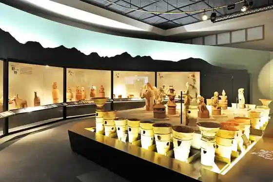
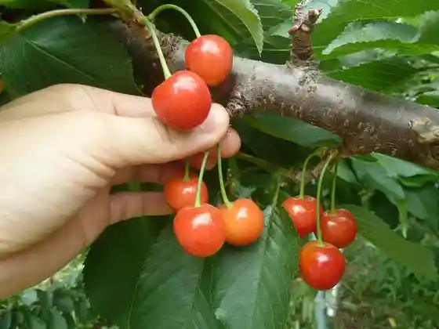
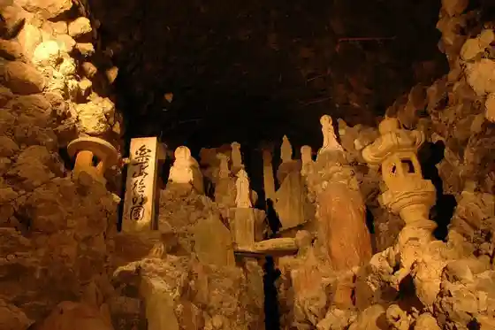

Ho Watarida Kofun Gun / Kamitsuke no Sato Museum
Takasaki, Gunma · 027-373-8880 · Official / source link

Kibo no Oka Farm
Takasaki, Gunma · 027-386-3081 · Official / source link

Cave Kannon Yama Toku Memorial Museum Tokumei Sono
Takasaki, Gunma · 027-323-3766 · Official / source link

Yaki Manju Paradaisu
Takasaki, Gunma · 027-330-5333 · Official / source link
Daruma Etsuke Ke Experience
Takasaki, Gunma · 027-386-5770 · Official / source link
Furutsu Kari (Takasaki)
Takasaki, Gunma · 027-374-5111 · Official / source link
Hakui Dai Kannon
Takasaki, Gunma · 027-322-2269 · Official / source link
Misato Shibazakura Park
Takasaki, Gunma · 027-371-5111 · Official / source link
Otsukaseiyaku (Kabu) Takasaki Kojo
Takasaki, Gunma · 027-353-2116 · Official / source link
Daruma no Furusato Daimon Ya
Takasaki, Gunma · 027-323-5223 · Official / source link
(Kabu) Harada Gatofesutaharada
Takasaki, Gunma · 0120-060-137 · Official / source link
Takasaki Denki Kan (Takasaki Chiiki Kasseika Center)
Takasaki, Gunma · 027-395-0483 · Official / source link
Kannon Sakura (Oka Village Gomeigaisha)
Takasaki, Gunma · 027-322-4137 · Official / source link
Osakazuki (Makino Shuzo (Kabu))
Takasaki, Gunma · 027-378-2011 · Official / source link
San Tsu Tera Park
Takasaki, Gunma · 027-373-0818 · Official / source link
Bara no Garden Kezo
Takasaki, Gunma · 090-2748-1369 · Official / source link
Haniwa no Sato Koen Chikaku no Himawari Hatake (Himawari Meiro)
Takasaki, Gunma · 027-373-1211 · Official / source link
Misato Umebayashi
Takasaki, Gunma · 027-371-5111 · Official / source link
Haniwa no Sato Kosumosu
Takasaki, Gunma · 027-373-8880 · Official / source link
Hanataka Tembo Hana no Oka
Takasaki, Gunma · 090-3246-8088 · Official / source link
Ogushi Katakuri Village (Katakuri)
Takasaki, Gunma · Official / source link
Hamakawa Sports Park (O Nuno Rogaike)
Takasaki, Gunma · 027-344-1855 · Official / source link
Ushibuse Yama Ajisai no Michi
Takasaki, Gunma · 027-387-3111 · Official / source link
Kiyomizudera (Ajisai)
Takasaki, Gunma · 027-323-3214 · Official / source link
Haruna Mizumi Lakeside Tote Basha
Takasaki, Gunma · 027-374-5111 · Official / source link
Roadside Station Kurabuchi Oguri Village
Takasaki, Gunma · 027-384-8282 · Official / source link
Kamitsuke no Sato Museum
Takasaki, Gunma · 027-373-8880 · Official / source link
Gunma Prefectural Nippon Kinu Village
Takasaki, Gunma · 027-360-6300 · Official / source link
Gunma Prefectural Kindai Art Museum
Takasaki, Gunma · 027-346-5560 · Official / source link
Gunma Prefectural Park Gunma Forest
Takasaki, Gunma · 027-346-2269 · Official / source link
Nagano Seki Yosui
Takasaki, Gunma · 027-322-2249 · Official / source link
Minowa Castle Ruins
Takasaki, Gunma · 027-371-5111 · Official / source link
Haruna Mizumi
Takasaki, Gunma · 027-374-5111 · Official / source link
Haruna Shrine
Takasaki, Gunma · 027-374-9050 · Official / source link
Haruna Yama
Takasaki, Gunma · 027-374-5111 · Official / source link
Kurabuchi So Kan Kawa Onsen
Takasaki, Gunma · 027-378-3834 · Official / source link
Yu Haji Onsen
Takasaki, Gunma · 027-384-8602 · Official / source link
Takasaki Nakao Onsen
Takasaki, Gunma · 027-362-1726 · Official / source link
Kurabuchi Onsen
Takasaki, Gunma · 027-378-2311 · Official / source link
Sanukiudon Men'ichi
Takasaki, Gunma · 027-321-9171 · Official / source link
Kappo Sawa
Takasaki, Gunma · 027-327-1738 · Official / source link
Shokusai Kobo Donguri
Takasaki, Gunma · 027-395-5007 · Official / source link
Haruna Yama Ropuei
Takasaki, Gunma · 027-374-9238 · Official / source link
Takasaki Jiman
Takasaki, Gunma · 027-381-6967 · Official / source link
Gunma Prefectural Tsuchiya Bunmei Kinen Literature Museum
Takasaki, Gunma · 027-373-7721 · Official / source link
Takasaki Hakui Dai Kannon
Takasaki, Gunma · 027-322-2269 · Official / source link
Gunma Prefectural History Museum
Takasaki, Gunma · 027-346-5522 · Official / source link
Historic Site Kannon Yama Burial Mound
Takasaki, Gunma · 027-226-4684 · Official / source link
Yoshii Chuo Park
Takasaki, Gunma · 027-387-4372 · Official / source link
Gunma Prefectural Kannon Yama Famirii Park
Takasaki, Gunma · 027-328-8389 · Official / source link
Gunma Prefectural Park Ai Dii E Gunma Forest
Takasaki, Gunma · 027-346-2269 · Official / source link
Kannon Yama Park
Takasaki, Gunma · Official / source link
Hamakawa Sports Park
Takasaki, Gunma · 027-344-1855 · Official / source link
Prefectural Haruna Park
Takasaki, Gunma · 027-324-9215 · Official / source link
Kurabuchi Seseragi Park
Takasaki, Gunma · 027-378-4530 · Official / source link
Haruna Mizumi Onsen
Takasaki, Gunma · 027-374-9211 · Official / source link
PRIVATE SAUNA ZERO
Takasaki, Gunma · 027-386-3557 · Official / source link
Hasu Ya Kannon Yama
Takasaki, Gunma · 090-8640-1957 · Official / source link